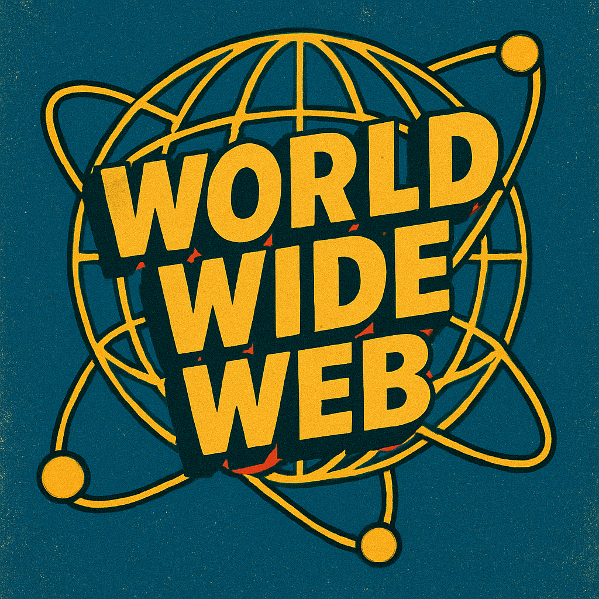

1. 🕰️ Internet Ki Shuruaat – Kahani Ki Shuruat
2. 🧑‍🔬Kisne Banaya Internet?
3. 🌠Internet Kahan Banaya Gaya?
4. 🤔 Internet Kyun Banaya Gaya?
5.📅 Public Ke Liye Kab Aaya?

6. 🌠World Wide Web kya Hai ?
7.📈 Kaise Internet Tezi Se Phela?
8. 🗓️ Important Dates Yaad Rakho
| saal | Kya Hua |
|---|---|
| 1969 | ARPANET start hua |
| 1973 | TCP/IP banaya gaya |
| 1983 | Internet officially shuru hua |
| 1989 | WWW ka idea aaya |
| 1991 | Web public ke liye open hua |
| 1993 | Mosaic browser aaya |
| 1995 | Amazon & eBay ki shuruaat |
| 2004 | Facebook launch hua |
| 2007 | Smartphone era shuru hua |
9.📱 Aaj Internet Kaise Kaam Aa Raha Hai ?